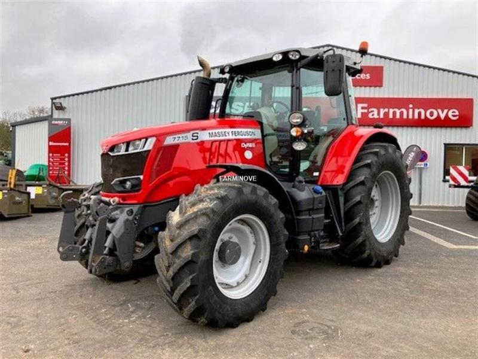

Massey Ferguson 7715

Massey Ferguson 7715 – це високотехнологічний трактор середньої потужності, розроблений для професійного землеробства. Завдяки довгій колісній базі та міцному шасі, трактор має чудову тягову здатність і стабільність, що робить його ідеальним для оранки, посіву та важких транспортних робіт.
Модель пропонує вибір між двома передовими трансмісіями: роботизованою Dyna-6 або безступінчастою Dyna-VT. Кабіна трактора встановлює високі стандарти комфорту завдяки підвісці, новому підлокітнику Command Control та можливості встановлення термінала Datatronic 5 для керування системами точного землеробства. Потужна гідравліка та вантажопідйомність задньої навіски до 7100 кг дозволяють ефективно працювати з найсучаснішими широкозахопними агрегатами.
| Параметр | Характеристика |
|---|---|
| Клас тяги | 3.0 |
| Тип ходової частини | колісний |
| Колісна формула | 4х4 (повний привід) |
| Тип рами | напіврамна (рамна конструкція з посиленим переднім мостом) |
| Основне призначення | енергоємні с/г роботи: оранка, дисковка, посів, робота з причепами, транспортування вантажів |
| Характеристика | Значення |
|---|---|
| Модель | AGCO Power 66 AWF |
| Тип двигуна | чотиритактний дизель з турбонаддувом та SCR (AdBlue) |
| Спосіб охолодження | рідинне (водяне) |
| Розташування циліндрів | рядне, вертикальне (6 циліндрів) |
| Діаметр циліндра/хід поршня | 108 мм / 120 мм |
| Робочий об’єм | 6,6 л |
| Номінальна потужність | 110 кВт (150 к.с.) |
| Максимальна потужність (з EPM) | 129 кВт (175 к.с.) |
| Номінальні оберти | 2100 об/хв |
| Система пуску | електростартер |
| Питома витрата палива | ~192 г/кВт.год |
| Параметр | Значення |
|---|---|
| Муфта зчеплення | мокра багатодискова (управління Power Shuttle) |
| Тип КПП | Dyna-6 (роботизована) або Dyna-VT (безступінчаста) |
| Кількість передач (Dyna-6) | 24 вперед / 24 назад |
| Кількість діапазонів | 4 діапазони по 6 передач |
| Діапазон швидкостей (вперед) | 1,09 – 40/50 км/год |
| Вал відбору потужності | задній незалежний, 540/540e/1000/1000e об/хв |
| Номер діапазону | Номер передачі | Теоретична швидкість, км/год | Передаточне число трансмісії | Тягове зусилля, кН |
|---|---|---|---|---|
| A (Робочий) | 1 | 1,09 | 248,5 | 58,40 |
| 2 | 1,31 | 206,8 | 58,40 | |
| 3 | 1,54 | 176,3 | 58,40 | |
| 4 | 1,85 | 146,8 | 58,40 | |
| 5 | 2,17 | 125,2 | 58,40 | |
| 6 | 2,61 | 104,1 | 58,40 | |
| B (Польовий) | 1 | 2,94 | 92,1 | 52,10 |
| 2 | 3,53 | 76,7 | 43,40 | |
| 3 | 4,14 | 65,4 | 37,00 | |
| 4 | 4,97 | 54,5 | 30,80 | |
| 5 | 5,84 | 46,4 | 26,20 | |
| 6 | 7,02 | 38,6 | 21,80 | |
| C (Транспорт) | 1 | 6,73 | 40,2 | 22,70 |
| 2 | 8,08 | 33,5 | 18,90 | |
| 3 | 9,48 | 28,6 | 16,20 | |
| 4 | 11,38 | 23,8 | 13,50 | |
| 5 | 13,37 | 20,3 | 11,50 | |
| 6 | 16,07 | 16,9 | 9,50 | |
| D (Швидкісний) | 1 | 16,77 | 16,2 | 9,10 |
| 6 | 40,00 | 6,8 | 3,80 |
| Параметр | Характеристика |
|---|---|
| Тип коліс | пневматичні шини низького тиску |
| Марка шин (базова) | передні: 480/70 R28; задні: 580/70 R38 |
| Радіус ведучого колеса (заднього) | ~0,9 м |
| Кількість коліс | 4 |
| Ведучі мости | обидва (підключення повного приводу електрогідравлічне |
| Параметр | Характеристика |
|---|---|
| Під час роботи з навантаженням | 18,0 – 24,0 кг/год |
| Під час холостих переїздів | 5,0 – 7,0 кг/год |
| Під час зупинок (холостий хід) | 1,5 – 2,0 кг/год |
| Параметр | Значення |
|---|---|
| Маса експлуатаційна (без баласту) | 6300 кг |
| Довжина / Ширина / Висота | 4928 мм / 2550 мм / 2985 мм |
| Колія / База | 1800-2100 мм / 2880 мм |
| Дорожній просвіт | 470 мм |
| Мінімальний радіус повороту | 4,9 м |
| Тип навісного пристрою | задній гідравлічний, триточковий (кат. 3) |
| Об’єм паливного баку | 305 л (+ 30 л AdBlue) |
| Параметр | Значення |
|---|---|
| Особливості кабіни | панорамна, з підвіскою, клімат-контролем, ергономічним підлокітником Command Control |
| Гальма | дискові мокрого типу в масляній ванні з гідроприводом |
| Електрообладнання | акумулятори 12 В (170 Аг) - 1 шт. або 2 шт., генератор 175 А |
| Начіпний пристрій | задня вантажопідйомність – 7100 кг (опційно до 8000 кг) |